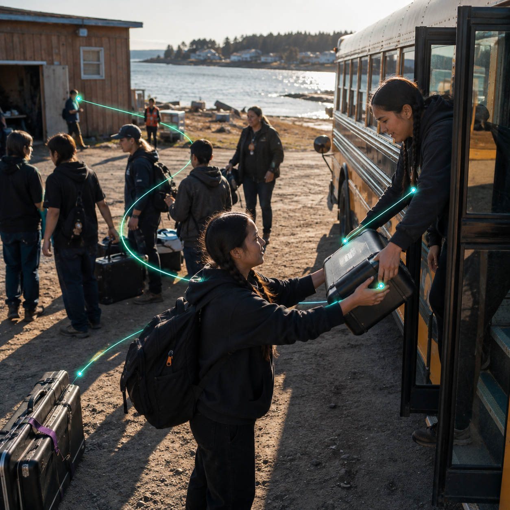

Part deUn mandat ou un plan qui doit devenir action

SCN-063 · Organiser et agir
Transformer l’intention collective en responsabilités suivies
Dans Koali, le même contexte passe d’une capacité spécialisée à l’autre sans être recréé, du point de départ « projet » jusqu’à « spectacle ». Sans ce fil commun, le travail arrive souvent sans le pourquoi, le bon contexte, ses dépendances ou la preuve attendue du résultat.
ExempleDes élèves de plusieurs écoles convergent vers Pessamit pour un spectacle préparé toute l’année à distance
TrouverComprendreApprendreCollaborerChoisirAgirRépondreSe souvenir
← Retour à la mosaïque complèteCe qui se perd sans continuité
Le travail arrive souvent sans le pourquoi, le bon contexte, ses dépendances ou la preuve attendue du résultat.
Chemin système
OrgoKonnaxion → keenKonnect → KonstructKonnaxion → keenKonnect → Stockage
Comment ça circule
projet → rôles → engagements → confirmations → dépendances → voyage → spectacle
Aussi utile pourécoles · voyages · événements communautaires